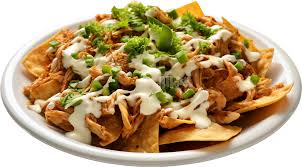

Nachos

Nachos are a popular and delicious snack made from crispy tortilla chips topped with melted cheese, seasoned meat, beans and an array of fresh toppings like jalapenos, tomatoes, guacamole, sour cream and salsa.
This Mexican-inspired dish is perfect for sharing, offering a delightful combination of crinchy, creamy and spicy flavors that make it an irresistible treat for gatherings, game days or casual meals.
Ingredients
- Tortilla chips
- Shredded cheese (cheddar, Monterey Jack, or a blend)
- Ground beef or shredded chicken (optional)
- Refried beans or black beans
- Jalapenos, sliced
- Diced tomatoes
- Sliced black olives
- Diced onions
- Fresh cilantro, chopped
- Sour cream
- Guacamole
- Salsa or pico de gallo
- Hot sauce (optional)
Steps
Prepare Meat (Optional):
Cook and season ground beef or shredded chicken.
Layer Ingredients:
- Preheat oven to 350 degrees.
- Spread tortilla chips on a baking sheet.
- Add refried beans or black beans.
- Sprinkle cooked meat (if using).
- Top with shredded cheese.
Bake:
Bake in oven for 10 minutes, until cheese melts.
Add Fresh Toppings:
Top with jalapenos, tomatoes, olives, onions and cilantro.
Serve:
- Add sour cream, guacamole, salsa and hot sauce.
- Enjoy immediately.